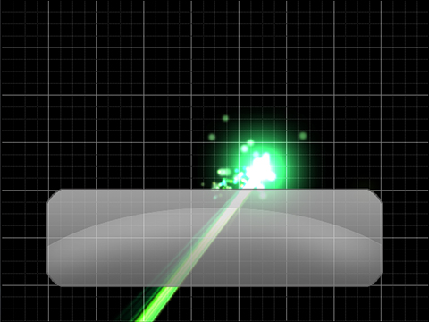
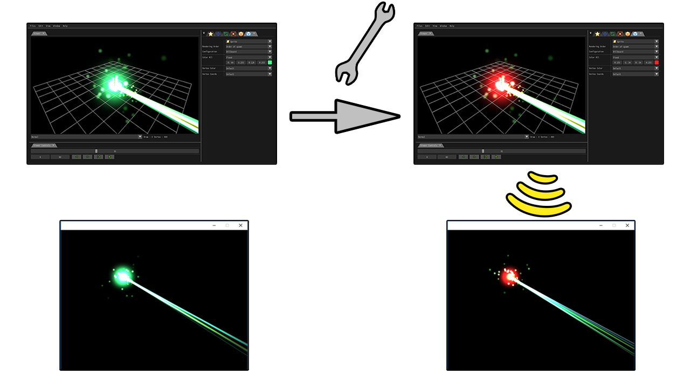

Effekseer For DXライブラリ
概要
DXライブラリとの連携について説明します。
DXライブラリにEffekseerのラッパーのlibを追加することで、お手軽にEffekseerをDXライブラリで使用できるようにしています。
現在、VisualStudio 2017,2019専用です。
Ver3.18a以降のバージョンで動作確認はしていますが、他のバージョンで動作するかは確認しておりません。
サンプルに関しては、Sampleディレクトリを確認お願いします。
更新履歴
1.50(20/03/18) DXライブラリを3.21d、Effekseer1.5に更新
1.43d(19/09/16) DXライブラリを3.21に更新、 VisualStudio2019でコンパイルできない不具合を修正
1.43d(19/07/09) DXライブラリを3.20fのBBSバージョンに更新、 DirectX11でデバイスロストで復帰できない不具合を修正
1.43b(19/06/29) DXライブラリを3.20fに更新、 デバイスロストで復帰できない不具合を修正
1.43(19/03/02) DXライブラリを3.20aに更新、 Effekseer更新
1.41(19/01/03) DXライブラリを3.19fに更新、 64bit対応
1.40(18/09/12) DXライブラリを3.19dに更新、 複数の関数追加
1.32b(18/02/10) DXライブラリを3.19に更新、VisualStudio2017への対応を強化
1.32(17/11/19) テクスチャのキャッシュ機能を追加
1.31(17/11/14) VisualStudio2017に対応
1.30(17/11/01) Effekseerを1.30に更新、DXライブラリを3.18eに更新、DirectX11に対応
1.10b(16/06/24) Effekseerを1.20に更新、DXライブラリを3.16dに更新
1.10b(16/05/23) DXライブラリを3.16bに更新、リソースファイルが深度に対応していなかった不具合を修正
1.10(16/02/28) Effekseerを1.10に更新、DXライブラリを3.16に更新、歪とネットワークに対応
1.01(15/08/26) Effekseerを1.01に更新、DXライブラリを3.15aに更新
1.00b(15/07/19) 文字コードの変更(CP932,Unicode)に対応
1.00 (15/07/15) 公開
インストール方法
「プロジェクトに追加すべきファイル_VC用/」 にEffekseerが追加されたDXライブラリが保存されています。 DXライブラリと同じように「プロジェクトに追加すべきファイル_VC用/」にあるファイルをプロジェクトに追加してください。
既にDXライブラリを使用している場合、
- 「Effekseer_vs2015_x86.lib」
- 「Effekseer_vs2015_x86_d.lib」
- 「EffekseerRendererDX9_vs2015_x86_d.lib」
- 「EffekseerRendererDX9_vs2015_x86.lib」
- 「EffekseerRendererDX11_vs2015_x86_d.lib」
- 「EffekseerRendererDX11_vs2015_x86.lib」
- 「EffekseerForDXLib_vs2015_x86_d.lib」
- 「EffekseerForDXLib_vs2015_x86.lib」
- 「Effekseer_vs2015_x64.lib」
- 「Effekseer_vs2015_x64_d.lib」
- 「EffekseerRendererDX9_vs2015_x64_d.lib」
- 「EffekseerRendererDX9_vs2015_x64.lib」
- 「EffekseerRendererDX11_vs2015_x64_d.lib」
- 「EffekseerRendererDX11_vs2015_x64.lib」
- 「EffekseerForDXLib_vs2015_x64_d.lib」
- 「EffekseerForDXLib_vs2015_x64.lib」
- 「Effekseer_vs2017_x86.lib」
- 「Effekseer_vs2017_x86_d.lib」
- 「EffekseerRendererDX9_vs2017_x86_d.lib」
- 「EffekseerRendererDX9_vs2017_x86.lib」
- 「EffekseerRendererDX11_vs2017_x86_d.lib」
- 「EffekseerRendererDX11_vs2017_x86.lib」
- 「EffekseerForDXLib_vs2017_x86_d.lib」
- 「EffekseerForDXLib_vs2017_x86.lib」
- 「Effekseer_vs2017_x64.lib」
- 「Effekseer_vs2017_x64_d.lib」
- 「EffekseerRendererDX9_vs2017_x64_d.lib」
- 「EffekseerRendererDX9_vs2017_x64.lib」
- 「EffekseerRendererDX11_vs2017_x64_d.lib」
- 「EffekseerRendererDX11_vs2017_x64.lib」
- 「EffekseerForDXLib_vs2017_x64_d.lib」
- 「EffekseerForDXLib_vs2017_x64.lib」
- 「Effekseer.h」
- 「EffekseerRendererDX9.h」
- 「EffekseerRendererDX11.h」
- 「EffekseerForDXLib.h」
のみをコピーしてください。
ただし、「Ver3.18a」以外のバージョンを使用している場合、 上記のlibファイルのコピーでは動作しないかもしれません。 その場合は、バージョンを一致させるか、「プロジェクトに追加すべきファイル_VC用/」にあるファイルを全てコピーしてください。
使い方
基本的にはサンプルと、EffekseerForDXLib.hを確認お願いします。
サンプルには2Dと3Dで、エフェクトを1つ再生して表示する最短のソースコードが記述されています。
ネットワーク機能
>ネットワーク経由でアプリケーション(ゲーム等)で再生しているエフェクトを外部からアプリケーションの起動中に編集することができます。
この関数の引数にEffekseerから接続するためのポートを指定して、この関数を実行します。そうすると、Effekseerからエフェクトを編集できるようになります。他のコンピューターからエフェクトを編集するためにはファイヤーウォールの設定でポート開放する必要があります。
int Effekseer_StartNetwork(int port);
制限
CreateMaskScreenといったマスク機能はサポートしていません。
ライセンス
Effekseerを追加したDXライブラリを使用する場合は、ヘルプ等に以下の文面を加える必要があります。
・DXライブラリ DX Library Copyright (C) 2001-2015 Takumi Yamada. ・Effekseer The MIT License (MIT) Copyright (c) 2011 Effekseer Project Permission is hereby granted, free of charge, to any person obtaining a copy of this software and associated documentation files (the "Software"), to deal in the Software without restriction, including without limitation the rights to use, copy, modify, merge, publish, distribute, sublicense, and/or sell copies of the Software, and to permit persons to whom the Software is furnished to do so, subject to the following conditions: The above copyright notice and this permission notice shall be included in all copies or substantial portions of the Software. THE SOFTWARE IS PROVIDED "AS IS", WITHOUT WARRANTY OF ANY KIND, EXPRESS OR IMPLIED, INCLUDING BUT NOT LIMITED TO THE WARRANTIES OF MERCHANTABILITY, FITNESS FOR A PARTICULAR PURPOSE AND NONINFRINGEMENT. IN NO EVENT SHALL THE AUTHORS OR COPYRIGHT HOLDERS BE LIABLE FOR ANY CLAIM, DAMAGES OR OTHER LIABILITY, WHETHER IN AN ACTION OF CONTRACT, TORT OR OTHERWISE, ARISING FROM, OUT OF OR IN CONNECTION WITH THE SOFTWARE OR THE USE OR OTHER DEALINGS IN THE SOFTWARE. DirectX Tool Kit https://directxtk.codeplex.com/ Microsoft Public License (Ms-PL)